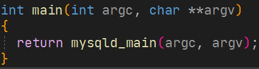
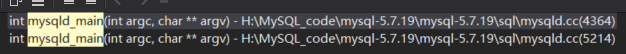
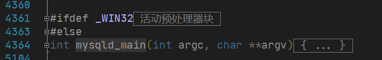
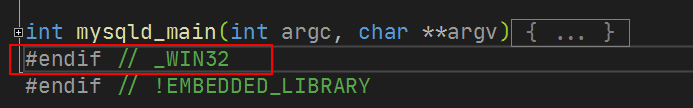
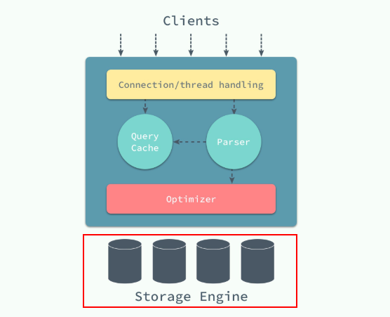
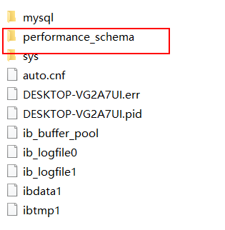

本文最后更新于：2020年7月28日 凌晨
1. main函数的理解
函数的入口在mysqld/main.cc里面：

而里面的函数在两个地方出现：

第一处在mysqld.cc的4364行出现：

从上很明显看出，如果是WIN32系统，则函数名字是win_main,而我的系统是64位的系统，所以函数才会被命名为mysqld_main.
第二个mysqld_main是在WIN32系统中定义的，在此不考虑：

查阅资料发现，Mysql为了实现可以在win32平台与类Uninx平台代码共用，将一些公用的函数抽象出来，但是win32和类unix平台启动方式不一样。细看win32的mysqld_main调用了mysql_service，mysql_service又调用了win_main函数，经过特殊操作处理后又回到了函数的公共定义内容：
//win32的mysqld_main
int mysqld_main(int argc, char **argv)
{
//...
mysql_service(NULL);
//...
}
int mysql_service(void *p)
{
//...
if (use_opt_args)
win_main(opt_argc, opt_argv);
else
win_main(Service.my_argc, Service.my_argv);
//...
}
//此win_main，就是第一个mysqld_main的代码内容2. main函数的流程
2.1准备
执行基本的线程库和malloc初始化，读取默认文件和解析选项。
if (load_defaults(MYSQL_CONFIG_NAME, load_default_groups, &argc, &argv)) { flush_error_log_messages(); return 1; }是否使用PERFORMANCE_SCHEMA存储引擎
#ifdef WITH_PERFSCHEMA_STORAGE_ENGINE /* Initialize the array of performance schema instrument configurations. */ init_pfs_instrument_array(); #endif /* WITH_PERFSCHEMA_STORAGE_ENGINE */
图源自:https://draven.co/默认配置文件的加载
load_defaults(MYSQL_CONFIG_NAME, load_default_groups, &argc, &argv)my.ini文件的加载顺序，它会这样加载：
C:/WINDOWS/my.cnf C:/WINDOWS/my.ini C:/my.cnf C:/my.ini如果指定了MYSQL_HOME，在找不到前边4个文件的时候，它会去查找$MYSQL_HOME$/my.cnf或my.ini
对应的代码如下：
char fname_buffer[FN_REFLEN]; //C:/WINDOWS/my.cnf if (my_get_system_windows_directory(fname_buffer, sizeof(fname_buffer))) errors += add_directory(alloc, fname_buffer, dirs); //C:/WINDOWS/my.ini if (GetWindowsDirectory(fname_buffer, sizeof(fname_buffer))) errors += add_directory(alloc, fname_buffer, dirs); //C:/my.cnf errors += add_directory(alloc, "C:/", dirs); //C:/my.ini if (my_get_module_parent(fname_buffer, sizeof(fname_buffer)) != NULL) errors += add_directory(alloc, fname_buffer, dirs); //。。。如果是Linux系统。。。 //如果上面的四个位置找不到，则进行下面查找 if ((env= getenv("MYSQL_HOME"))) errors += add_directory(alloc, env, dirs); /* Placeholder for --defaults-extra-file=<path> */ errors += add_directory(alloc, "", dirs);
2.1WITH_PERFSCHEMA_STORAGE_ENGINE宏定义
#ifdef WITH_PERFSCHEMA_STORAGE_ENGINE
/*
Initialize the array of performance schema instrument configurations.
*/
init_pfs_instrument_array();
#endif /* WITH_PERFSCHEMA_STORAGE_ENGINE */对应的编译的参数为-DWITH_ARCHIVE_STORAGE_ENGINE=1，对应的详细信息在：
https://dev.mysql.com/doc/refman/5.7/en/performance-schema.html

初始化一些线程会用到的锁、信号量、变量等，其中封装了一些pthread的函数
接了下来调用了各种线程的初始化，过程感觉不是重点，没有继续看下去
if (my_init()) { sql_print_error("my_init() failed."); flush_error_log_messages(); return 1; }初始化SQL statement
init_sql_statement_names();初始化系统变量
int sys_var_init() { DBUG_ENTER("sys_var_init"); /* Must be already initialized. */ DBUG_ASSERT(system_charset_info != NULL); if (my_hash_init(&system_variable_hash, system_charset_info, 100, 0, 0, (my_hash_get_key) get_sys_var_length, 0, HASH_UNIQUE, PSI_INSTRUMENT_ME)) goto error; if (mysql_add_sys_var_chain(all_sys_vars.first)) goto error; DBUG_RETURN(0); error: my_message_local(ERROR_LEVEL, "failed to initialize system variables"); DBUG_RETURN(1); }system_variable_hash是一个用于保存sys_var的哈希表mysql_add_sys_var_chain这个函数的本意应该是将all_sys_vars中的数据都加入system_variable_hash这个哈希表中调整相关的选项
adjust_related_options(&requested_open_files);具体的内容不是很清楚，看方法名猜测是调整函数名字对应的几个参数：
void adjust_related_options(ulong *requested_open_files) { /* In bootstrap, disable grant tables (we are about to create them) */ if (opt_bootstrap) opt_noacl= 1; /* The order is critical here, because of dependencies. */ adjust_open_files_limit(requested_open_files); adjust_max_connections(*requested_open_files); adjust_table_cache_size(*requested_open_files); adjust_table_def_size(); }打开文件的数量，最大连接数，表缓存大小等等
open_files_limit值：
my.cnf里如果配置了open_files_limit，open_files_limit最后取值为 配置文件 open_files_limit，max_connections*5， wanted_files= 10+max_connections+table_cache_size*2 三者中的最大值。
如果my.cnf里如果没配置open_files_limit，open_files_limit最后取值为max_connections*5，10+max_connections+table_cache_size*2，ulimit -n中的最大者
max_connections的限制：
因为MySQL的最大连接数受到了安装平台的线程库、可用内存、每个连接需要使用的内存、每个连接的工作量、响应时间的影响，linux大概能承受500～1000并发请求，而Windows由于Posix通用接口层的限制，必须满足(open tables × 2 + open connections) < 2048
void adjust_max_connections(ulong requested_open_files) { ulong limit; limit= requested_open_files - 10 - TABLE_OPEN_CACHE_MIN * 2; if (limit < max_connections) { sql_print_warning("Changed limits: max_connections: %lu (requested %lu)", limit, max_connections); // This can be done unprotected since it is only called on startup. max_connections= limit; } }TABLE_OPEN_CACHE_MIN是写死的宏：400
table_open_cache
table_open_cache受到了max_connections的限制，至少需要连接数*该链接执行的join表的个数
void adjust_table_cache_size(ulong requested_open_files) { ulong limit; limit= max<ulong>((requested_open_files - 10 - max_connections) / 2, TABLE_OPEN_CACHE_MIN); if (limit < table_cache_size) { sql_print_warning("Changed limits: table_open_cache: %lu (requested %lu)", limit, table_cache_size); table_cache_size= limit; } table_cache_size_per_instance= table_cache_size / table_cache_instances; }table_definition_cache
table_definition_cache是能放在缓存中的表的定义的数量，表的定义在缓存中的时候能够加快打开表的速度，默认是400 + (table_open_cache / 2)
default_value= min<ulong> (400 + table_cache_size / 2, 2000); var= intern_find_sys_var(STRING_WITH_LEN("table_definition_cache")); DBUG_ASSERT(var != NULL); var->update_default(default_value);
对相关的配置进行生效
if (ho_error == 0) { if (!opt_help && !opt_bootstrap) { /* Add sizing hints from the server sizing parameters. */ pfs_param.m_hints.m_table_definition_cache= table_def_size; pfs_param.m_hints.m_table_open_cache= table_cache_size; pfs_param.m_hints.m_max_connections= max_connections; pfs_param.m_hints.m_open_files_limit= requested_open_files; pfs_param.m_hints.m_max_prepared_stmt_count= max_prepared_stmt_count; PSI_hook= initialize_performance_schema(&pfs_param); if (PSI_hook == NULL && pfs_param.m_enabled) { pfs_param.m_enabled= false; sql_print_warning("Performance schema disabled (reason: init failed)."); } } }
2.2HAVE_PSI_INTERFACE宏定义
PSI代表：Performance schema instrumentation interface性能模式检测接口
#ifdef HAVE_PSI_INTERFACE
/*
获取当前的性能模式检测接口，如果可供使用的话。
*/
if (PSI_hook)
{
PSI *psi_server= (PSI*) PSI_hook->get_interface(PSI_CURRENT_VERSION);
if (likely(psi_server != NULL))
{
set_psi_server(psi_server);
/*
2.1解析了命令行参数，并且已经初始化了性能模式(performance schema instrument)，接下来注册所有服务器检测
*/
init_server_psi_keys();
/* 检测主要的线程 */
PSI_thread *psi= PSI_THREAD_CALL(new_thread)(key_thread_main, NULL, 0);
PSI_THREAD_CALL(set_thread_os_id)(psi);
PSI_THREAD_CALL(set_thread)(psi);
/*
一些检测已经到位,重新初始化在之前已经初始化的对象,以便更好的检测.
*/
my_thread_global_reinit();
}
}
#endif /* HAVE_PSI_INTERFACE */2.3 query日志初始化
init_error_log();
/* Initialize audit interface globals. Audit plugins are inited later. */
mysql_audit_initialize();
#ifndef EMBEDDED_LIBRARY
Srv_session::module_init();
#endif
/*
执行基本查询日志初始化。 应该在MY_INIT之后调用，因为它会初始化互斥量。
*/
query_logger.init();2.4 如果错误则退出
if (ho_error)
{
/*
解析命令行选项失败，由于没有可行的剩下的_argc / remaining_argv来继续服务器初始化，因此代码已尽其所能。
这是记录有意义消息的最大努力：
-消息将打印到stderr，但尚未重定向，
-对于Windows，消息将打印在NT事件日志中。
*/
flush_error_log_messages();
/*
Not enough initializations for unireg_abort()
Using exit() for windows.
*/
exit (MYSQLD_ABORT_EXIT);
}
if (init_common_variables())
unireg_abort(MYSQLD_ABORT_EXIT); // 如果初始化失败就直接退出SQL
my_init_signals();2.5 堆栈的大小初始化
my_thread_attr_setstacksize(&connection_attrib,
my_thread_stack_size + guardize);
{
/* Retrieve used stack size; Needed for checking stack overflows */
size_t stack_size= 0;
my_thread_attr_getstacksize(&connection_attrib, &stack_size);
/* We must check if stack_size = 0 as Solaris 2.9 can return 0 here */
if (stack_size && stack_size < (my_thread_stack_size + guardize))
{
sql_print_warning("Asked for %lu thread stack, but got %ld",
my_thread_stack_size + guardize, (long) stack_size);
#if defined(__ia64__) || defined(__ia64)
my_thread_stack_size= stack_size / 2;
#else
my_thread_stack_size= static_cast<ulong>(stack_size - guardize);
#endif
}
}2.6 开启binlog会检查server_id
if (opt_bin_log && !(server_id_supplied) )
{
sql_print_error("You have enabled the binary log, but you haven't provided "
"the mandatory server-id. Please refer to the proper "
"server start-up parameters documentation");
unireg_abort(MYSQLD_ABORT_EXIT);
}如果开启二进制日志但是没有提供操作服务器ID就会报错并退出
2.7 服务器组件初始化
if (init_server_components())
unireg_abort(MYSQLD_ABORT_EXIT);2.8检查data目录下是否有auto.cnf
/*
Each server should have one UUID. We will create it automatically, if it
does not exist.
*/
if (init_server_auto_options())
{
sql_print_error("Initialization of the server's UUID failed because it could"
" not be read from the auto.cnf file. If this is a new"
" server, the initialization failed because it was not"
" possible to generate a new UUID.");
unireg_abort(MYSQLD_ABORT_EXIT);
}2.9将uuid加入sid_map()中
/*
Add server_uuid to the sid_map. This must be done after
server_uuid has been initialized in init_server_auto_options and
after the binary log (and sid_map file) has been initialized in
init_server_components().
No error message is needed: init_sid_map() prints a message.
Strictly speaking, this is not currently needed when
opt_bin_log==0, since the variables that gtid_state->init
initializes are not currently used in that case. But we call it
regardless to avoid possible future bugs if gtid_state ever
needs to do anything else.
*/
global_sid_lock->wrlock();
int gtid_ret= gtid_state->init();
global_sid_lock->unlock();
if (gtid_ret)
unireg_abort(MYSQLD_ABORT_EXIT);2.10初始化gtid_state对象以及对应的操作
// Initialize executed_gtids from mysql.gtid_executed table.
if (gtid_state->read_gtid_executed_from_table() == -1)
unireg_abort(1);GTID (Global Transaction ID)是全局事务ID,当在主库上提交事务或者被从库应用时，可以定位和追踪每一个事务，对DBA来说意义就很大了，我们可以适当的解放出来，不用手工去可以找偏移量的值了，而是通过CHANGE MASTER TO MASTER_HOST=’xxx’, MASTER_AUTO_POSITION=1的即可方便的搭建从库，在故障修复中也可以采用MASTER_AUTO_POSITION=‘X’的方式。
在以下四种情况下，将未保存的GTID保存到gtid_exected表中：
- 升级
- 从主服务器的备份中配置了一个从服务器，并且在此之前通过RESET MASTER和RESET SLAVE清除了从服务器。
- 在崩溃前从服务器上的最后一个RESET MASTER没有发生二进制日志轮换
- 如果服务器崩溃，则最后一个binlog的GTID集不会保存到gtid_exected表中，因此在从崩溃中恢复期间，我们将其保存到gtid_executed表和execute_gtids中。
其中的代码我没有仔细研究
2.11 网络连接
SSL支持与网络的初始化
if (init_ssl()) unireg_abort(MYSQLD_ABORT_EXIT); if (network_init()) unireg_abort(MYSQLD_ABORT_EXIT);network_init主要做了以下几件事情：
https://blog.csdn.net/Martin201609/article/details/100747413
set_ports() 进行相应的初始化端口,创建监听对象Mysqld_socket_listener，并对其进行相应的初始化操作。然后对listener进行相应的侦听动作
static bool network_init(void) { if (opt_bootstrap) return false; set_ports(); //端口设置 //... Mysqld_socket_listener *mysqld_socket_listener= new (std::nothrow) Mysqld_socket_listener(bind_addr_str, mysqld_port, back_log, mysqld_port_timeout, unix_sock_name); }//监听对象 // ... mysqld_socket_acceptor= new (std::nothrow) Connection_acceptor<Mysqld_socket_listener>(mysqld_socket_listener);// //... if (mysqld_socket_acceptor->init_connection_acceptor())//实例化并监听 return true; // mysqld_socket_acceptor would be freed in unireg_abort.set_port():static void set_ports() { char *env; if (!mysqld_port && !opt_disable_networking) { // Get port if not from commandline mysqld_port= MYSQL_PORT; /* 如果构建器明确要求使用默认端口，则使用该端口（即使它与默认值一致）。 只有在他们没有这样做的情况下，我们才 检查/etc/services（如果失败，则退回到出厂默认值3306）。 这两个默认值都可以被环境变量MYSQL_TCP_PORT 覆盖，而环境变量又可以由命令行选项覆盖。 */ #if MYSQL_PORT_DEFAULT == 0 //这个参数是在make编译生成之后，在include/mysql_version.h生成，其值为 #define MYSQL_PORT_DEFAULT @MYSQL_TCP_PORT_DEFAULT@ //MYSQL_TCP_PORT_DEFAULT这个值是在cmake/mysql_version.cmake的文件中配置的 /* [root@pcserver mysql-5.7.27]# grep -rn "MYSQL_TCP_PORT_DEFAULT" * cmake/mysql_version.cmake:88:SET(MYSQL_TCP_PORT_DEFAULT "3306") cmake/mysql_version.cmake:91: SET(MYSQL_TCP_PORT ${MYSQL_TCP_PORT_DEFAULT}) cmake/mysql_version.cmake:92: SET(MYSQL_TCP_PORT_DEFAULT "0") cmake/mysql_version.cmake:93:ELSEIF(MYSQL_TCP_PORT EQUAL MYSQL_TCP_PORT_DEFAULT) cmake/mysql_version.cmake:94: SET(MYSQL_TCP_PORT_DEFAULT "0") include/mysql_version.h.in:18:#define MYSQL_PORT_DEFAULT @MYSQL_TCP_PORT_DEFAULT@ scripts/mysql_config.pl.in:161:if ( '@MYSQL_TCP_PORT_DEFAULT@' == 0 ) { scripts/mysql_config.sh:106:if [ @MYSQL_TCP_PORT_DEFAULT@ -eq 0 ]; then */ struct servent *serv_ptr; if ((serv_ptr= getservbyname("mysql", "tcp"))) mysqld_port= ntohs((u_short) serv_ptr->s_port); /* purecov: inspected */ #endif if ((env = getenv("MYSQL_TCP_PORT"))) mysqld_port= (uint) atoi(env); /* purecov: inspected 通过getenv获取启动配置命令行的端口*/ } if (!mysqld_unix_port) { #ifdef _WIN32 mysqld_unix_port= (char*) MYSQL_NAMEDPIPE; #else mysqld_unix_port= (char*) MYSQL_UNIX_ADDR; #endif if ((env = getenv("MYSQL_UNIX_PORT"))) mysqld_unix_port= env; /* purecov: inspected */ } }创建监听:
创建 Mysqld_socket_listener 类型对象
Mysqld_socket_listener *mysqld_socket_listener= new (std::nothrow) Mysqld_socket_listener(bind_addr_str, mysqld_port, back_log, mysqld_port_timeout, unix_sock_name);通过Connection_acceptor模板进行Mysqld_socket_listener的初始化，通过循环监控不同类型的client connection event的，也就是通过循环监听客户端来的连接
创建mysql_socket_acceptor对象：
mysqld_socket_acceptor= new (std::nothrow) Connection_acceptor<Mysqld_socket_listener>(mysqld_socket_listener);初始化listener：
if (mysqld_socket_acceptor->init_connection_acceptor()) return true; // mysqld_socket_acceptor would be freed in unireg_abort.查看Mysqld_socket_listener中的setup_listener()具体的实现：
通过以下关键变量来记录listener的主要信息
m_tcp_port:记录tcp socket连接
m_unix_sockname: 使用的是std::string类型记录如果使用socket文件，则文件名（路径+文件）
通过使用m_socket_map来区分所使用的连接是tcp_socket还是unix socket的连接方式通过两个if判断，分别判断是否tcp还是socket文件连接，并记录于m_socket_map中然后通过迭代器循环实现监听事件的记录，代码通过pool_info_t实现监听相应的事件
UDP初始化
udf_init();slave初始化
if (server_id != 0)
init_slave(); /* Ignoring errors while configuring replication. */2.12 初始化线程
#ifdef _WIN32
create_shutdown_thread();
#endif
start_handle_manager();
create_compress_gtid_table_thread();
sql_print_information(ER_DEFAULT(ER_STARTUP),
my_progname,
server_version,
#ifdef HAVE_SYS_UN_H
(opt_bootstrap ? (char*) "" : mysqld_unix_port),
#else
(char*) "",
#endif
mysqld_port,
MYSQL_COMPILATION_COMMENT);
#if defined(_WIN32)
Service.SetRunning();
#endif
start_processing_signals();2.13循环监听客户端
此处循环监听客户端,直到客户端选择退出再进行后续的操作,所以此函数一般情况是SQL的耗时最多,执行代码最多的地方,也是mysql的核心算法的代码
此时要分为两种系统讨论:windows和Linux
#if defined(_WIN32)
setup_conn_event_handler_threads();
#else
mysql_mutex_lock(&LOCK_socket_listener_active);
// Make it possible for the signal handler to kill the listener.
socket_listener_active= true;
mysql_mutex_unlock(&LOCK_socket_listener_active);
if (opt_daemonize)
mysqld::runtime::signal_parent(pipe_write_fd,1);
mysqld_socket_acceptor->connection_event_loop();
#endif /* _WIN32 */2.13.1 linux系统
mysql_mutex_lock(&LOCK_socket_listener_active);
// Make it possible for the signal handler to kill the listener.
socket_listener_active= true;
//从这里开始，服务器启动线程一直等待，直到shutdown后，继续向下执行
mysql_mutex_unlock(&LOCK_socket_listener_active);
if (opt_daemonize)
mysqld::runtime::signal_parent(pipe_write_fd,1);
mysqld_socket_acceptor->connection_event_loop();通过nysqld_socket_acceptor变量引用connect_event_loop()方法，循环监听客户端来的连接。通过模板调用如下 ：
/**
Connection acceptor loop to accept connections from clients.
*/
void connection_event_loop()
{
Connection_handler_manager *mgr= Connection_handler_manager::get_instance();
while (!abort_loop)
{
Channel_info *channel_info= m_listener->listen_for_connection_event();
if (channel_info != NULL)
mgr->process_new_connection(channel_info);
}
}通过查看Mysqld_socket_listener类中listen_for_connection_event()来得到Channel_info信息，然后通过process_new_connection创建新的连接来。再进一步查看Connection_handler_manager的process_new_connection的方法，发现有m_connection_handler->add_connection(channel_info)在connection_handler中增加一个connection,并记录数量增加:
void Connection_handler_manager::process_new_connection(Channel_info* channel_info)
{
if (abort_loop || !check_and_incr_conn_count())
{
channel_info->send_error_and_close_channel(ER_CON_COUNT_ERROR, 0, true);
delete channel_info;
return;
}
if (m_connection_handler->add_connection(channel_info)) //增加一个connection
{
inc_aborted_connects(); //记录数量增加
delete channel_info;
}
}对于m_connection_handler的add_connection增加connection，看具体的实现：
bool Per_thread_connection_handler::add_connection(Channel_info* channel_info)
{
int error= 0;
my_thread_handle id;
DBUG_ENTER("Per_thread_connection_handler::add_connection");
// Simulate thread creation for test case before we check thread cache
DBUG_EXECUTE_IF("fail_thread_create", error= 1; goto handle_error;);
if (!check_idle_thread_and_enqueue_connection(channel_info))
DBUG_RETURN(false);
/*
There are no idle threads avaliable to take up the new
connection. Create a new thread to handle the connection
*/
channel_info->set_prior_thr_create_utime();
error= mysql_thread_create(key_thread_one_connection, &id,
&connection_attrib,
handle_connection,
(void*) channel_info);//给定信息，创建thread进程
#ifndef DBUG_OFF
handle_error:
#endif // !DBUG_OFF
if (error)
{
connection_errors_internal++;
if (!create_thd_err_log_throttle.log())
sql_print_error("Can't create thread to handle new connection(errno= %d)",
error);
channel_info->send_error_and_close_channel(ER_CANT_CREATE_THREAD,
error, true);
Connection_handler_manager::dec_connection_count();
DBUG_RETURN(true);
}
Global_THD_manager::get_instance()->inc_thread_created();
DBUG_PRINT("info",("Thread created"));
DBUG_RETURN(false);
}创建mysql_thread_create创建thread，并接收一个方法参数 handle_connection，这个是一个函数:
extern "C" void *handle_connection(void *arg)
{
//...
THD *thd= init_new_thd(channel_info); //创建线程对象
//...
mysql_thread_set_psi_id(thd->thread_id()); //初始化线程信息等
mysql_thread_set_psi_THD(thd);
mysql_socket_set_thread_owner(
thd->get_protocol_classic()->get_vio()->mysql_socket);
thd_manager->add_thd(thd);//向线程管理器增加一个线程信息
if (thd_prepare_connection(thd))
handler_manager->inc_aborted_connects();
else
{
while (thd_connection_alive(thd))//循环检测线程状态
{
if (do_command(thd)) // 执行相关参数命令
break;
}
end_connection(thd);
}
close_connection(thd, 0, false, false);
thd->get_stmt_da()->reset_diagnostics_area();
thd->release_resources();
//...
}在handle_connection中,通过while回圈呼叫sql_parse.cc中的do_command()，回圈的作用是从使用者输入的多个命令中依次选择一个命令去执行.在do_command()中，呼叫Protocol_classic::get_command()，进入Protocol_classic::parse_packet()读取一个数据包，解析为command命令,command命令有COM_QUERY、 COM_FIELD_LIST、COM_STMT_EXECUTE等。在在do_command()中继续呼叫sql_parse()档案中的dispatch_command().在dispatch_command()中包含了各种型别的command怎么处理的switch case。比如select的进入case COM_QUERY.先alloc_query()复制执行绪执行绪过来的查询命令。再进入sql_parse.cc档案中的mysql_parse()方法,开始sql语法解析.
sql语法解析阶段:
- 在mysql_parse()中,主要完成三个工作。检查查询快取里是否有以前执行过的某个查询。呼叫词法解析器(通过parse_sql()方法)，呼叫查询优化器(通过mysql_execute_command()方法).
- 依次进入sql_parse.cc中的parse_sql(),进入sql_class.cc中的THD::sql_parser() ,进入MYSQLparse().MYSQLparse是个巨集定义,为#define yyparse MYSQLparse.这时进入yacc的sql_yacc.cc档案中的语法解析器函式yyparse()开始语法解析.解析器基于sql_yacc.yy档案通过yacc生成.Mysql的词法解析器没有用flex,自己编写的。语法解析器用的Bison.
- 在mysql_parse()中继续呼叫sql_parse()档案中的mysql_execute_command()方法,为sql优化做准备.在该方法中,通过switch case为各种sql命令优化做准备.如果是select查询，进入case SQLCOM_SELECT，进入Sql_cmd_dml::execute()方法.在execute()方法中,先呼叫precheck()查询是否有许可权，然后呼叫open_tables_for_query()开启要查询的表，然后呼叫lock_tables()锁定相关的表，然后呼叫Sql_cmd_dml::execute_inner(),进入真正的查询优化.
sql查询优化阶段:
- 在Sql_cmd_dml::execute_inner()方法中，先进入sql_optimizer.cc档案中的JOIN::optimize(),再进入sql_executor.cc档案中的JOIN::exec()开始查询执行器。
sql查询执行器:
- 在sql_executor.cc档案中的JOIN::exec()中.先呼叫send_result_set_metadata()生成查询标题，再进入sql_executor.cc中的do_select()生成查询结果.在do_select()中呼叫sub_select ().在sub_select()中，先判断是否是最后一条记录.然后while回圈每次读取一条记录。
sql查询优化阶段:
- 在Sql_cmd_dml::execute_inner()方法中，先进入sql_optimizer.cc档案中的JOIN::optimize(),再进入sql_executor.cc档案中的JOIN::exec()开始查询执行器。
sql查询执行器:
- 在sql_executor.cc档案中的JOIN::exec()中.先呼叫send_result_set_metadata()生成查询标题，再进入sql_executor.cc中的do_select()生成查询结果.在do_select()中呼叫sub_select ().在sub_select()中，先判断是否是最后一条记录.然后while回圈每次读取一条记录。
2.13.2 windows系统
调用函数setup_conn_event_handler_threads();,此时创建监听线程,启动三个单独线程处理不同的连接方式，即Mysqld_socket_listener/Named_pipe_listener/Shared_mem_listener,函数执行了的操作如下:
void setup_conn_event_handler_threads()
{
my_thread_handle hThread;
//...
//互斥锁
mysql_mutex_lock(&LOCK_handler_count);
handler_count=0;
//类似于上面Linux的`对于m_connection_handler的add_connection增加connection`
if (opt_enable_named_pipe)
{
int error= mysql_thread_create(key_thread_handle_con_namedpipes,
&hThread, &connection_attrib,
named_pipe_conn_event_handler,
named_pipe_acceptor);
if (!error)
handler_count++;
else
sql_print_warning("Can't create thread to handle named pipes"
" (errno= %d)", error);
}
if (have_tcpip && !opt_disable_networking)
{
int error= mysql_thread_create(key_thread_handle_con_sockets,
&hThread, &connection_attrib,
socket_conn_event_handler,
mysqld_socket_acceptor);
if (!error)
handler_count++;
else
sql_print_warning("Can't create thread to handle TCP/IP (errno= %d)",
error);
}
if (opt_enable_shared_memory)
{
int error= mysql_thread_create(key_thread_handle_con_sharedmem,
&hThread, &connection_attrib,
shared_mem_conn_event_handler,
shared_mem_acceptor);
if (!error)
handler_count++;
else
sql_print_warning("Can't create thread to handle shared memory"
" (errno= %d)", error);
}
// Block until all connection listener threads have exited.
while (handler_count > 0)
mysql_cond_wait(&COND_handler_count, &LOCK_handler_count);
mysql_mutex_unlock(&LOCK_handler_count);
DBUG_VOID_RETURN;
}拿第一个opt_enable_named_pipe为例,调用了’死’循环函数named_pipe_conn_event_handler:
extern "C" void *named_pipe_conn_event_handler(void *arg)
{
my_thread_init();
Connection_acceptor<Named_pipe_listener> *conn_acceptor=
static_cast<Connection_acceptor<Named_pipe_listener>*>(arg);
conn_acceptor->connection_event_loop();
decrement_handler_count();
my_thread_end();
return 0;
}和Linux分析一样,conn_acceptor->connection_event_loop();进行’通过nysqld_socket_acceptor变量引用connect_event_loop()方法，循环监听客户端来的连接’,接着就回到了Linux的分析
2.14 后续的结束收尾工作
略
3. 总结
本次源码的分析主要是针对main函数的分析,初步了解了main函数的工作流程,后续将会主要针对Innodb引擎进行分析
本博客所有文章除特别声明外，均采用 CC BY-SA 4.0 协议 ，转载请注明出处！